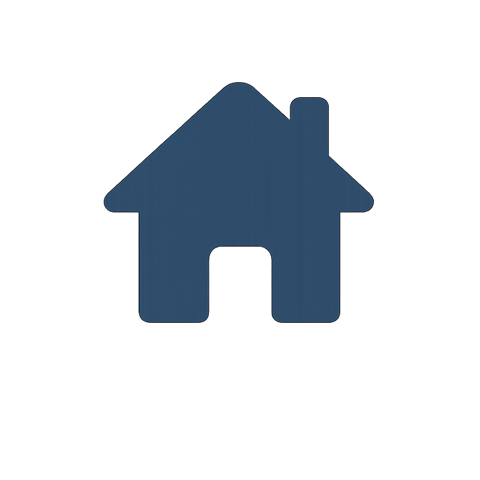

A guide to the app
Your photos, organized.
Your folders, your choices. Sort and manage your photos offline, explore the people and connections within them, and create albums around your ideas.
Explore the features
Select a feature to read more.
About QuackSortYour photo collection, under your control.
QuackSort gives you the freedom to choose which photos to sort and where to keep them. Sorting and photo management run offline on your device, without uploading your photos to the cloud for processing.
Choose your folders, organize photos by person, and explore a connection graph to see who appears together. Find shared photos of pairs or any combination of people, then build albums around themes and ideas.
Online features are optional. Use online enrollment or share photos through QuackShare or Google Drive when you choose, with those services handling the information you send through them.

HomeA starting point for your photo collection.
Choose the photo collection you want to organize. QuackSort uses an event to group your work, whether it is an everyday photo folder, a family collection, a trip, or an occasion. Home also gives you access to optional online registration and the enrollment link.
- Create or select an event for the collection you want to work on.
- Set the Event Directory to the folder containing its photos.
- Register the event for online enrollment, if you want people to enroll through a link.
EnrollmentsGive each face a name.
Enroll people so QuackSort knows who to look for in your photos. People can also register through an enrollment link.
- Add a person with their details and a clear face photo.
- Share the enrollment link when people want to register themselves.
- Use Sync Enrollments to bring their registrations into the selected event.
SortTurn a photo folder into personal galleries.
QuackSort matches enrolled faces and organizes matching photos into folders for each person. A group photo can appear in more than one person’s folder.
- Enroll the people you want to find and choose the photo folder to sort.
- Start Sort and let the app find matching faces.
- Review the person-wise results. Use Auto Sort to process incoming photos automatically.
PeopleFind a person. See their photos.
Browse the people enrolled in your selected collection, open their galleries, and manage their details.
- Search for the person you need.
- Open their gallery to review the photos matched to them.
ConnectionsSee who appears together.
Explore a graph of people who share photos. Connections help you find moments featuring a particular pair of people.
- Select a connection between two people in the graph.
- Review the photos they appear in together in the image panel.
Group CardsFind everyone in the same frame.
Find photos containing everyone you select. Use it to look for a family photo, a group of friends, or a particular combination of people.
- Select one or more people.
- Review photos that include all selected people.
- Change your selection to explore a different group.
Create AlbumMake a smaller, more meaningful selection.
Build an album from your photo collection. Choose the approach that fits what you want to make.
- Regular Album: create a curated selection of strong photos from a source folder.
- Concept Album: use reference images to find photos matching visual themes.
- Review the selection before sharing it.